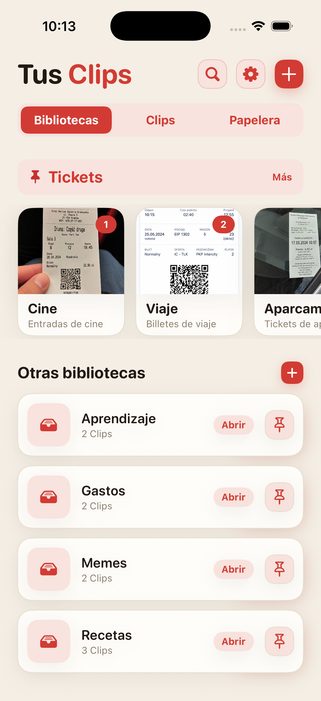
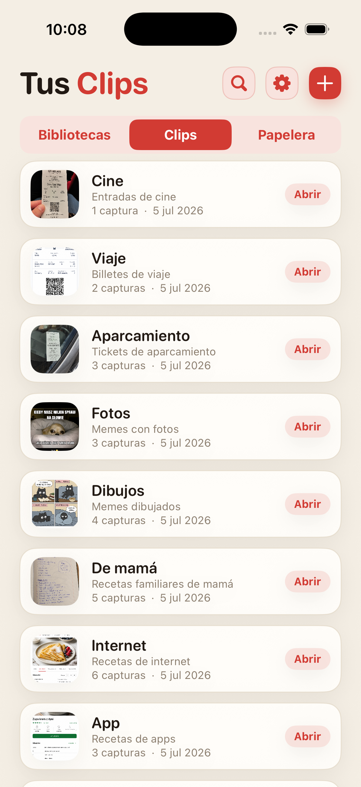
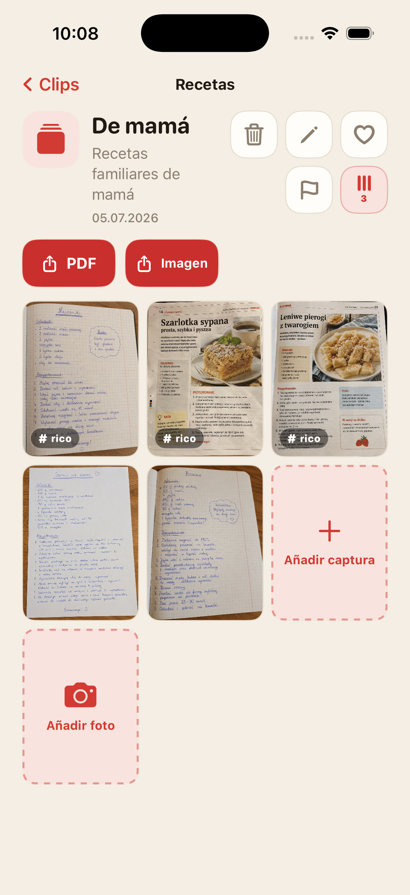
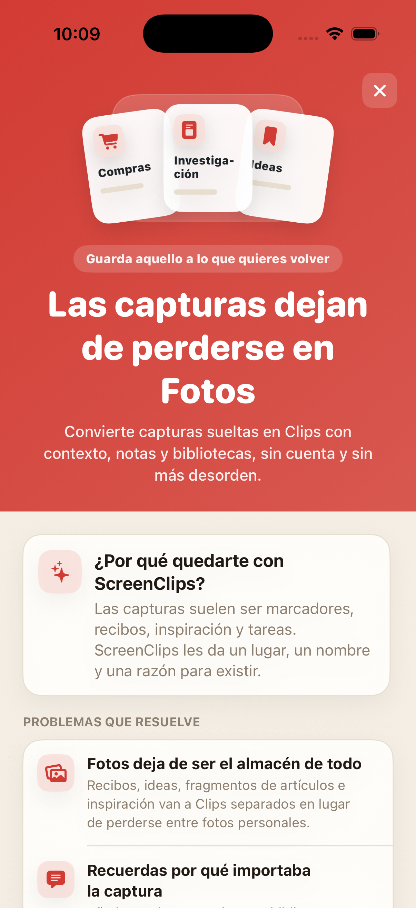

La captura se pierde entre todo lo demás
Guardas algo importante y una semana después recorres la galería como si revisaras pruebas de un caso.
Convierte capturas sueltas en Clips con nombre, nota y biblioteca propia. Sin cuenta, sin nube y sin volver a excavar en el carrete cada vez que necesitas algo.

Recibos, recetas, tickets, ideas y fragmentos de artículos acaban mezclados con selfies, memes y fotos accidentales. Inventamos la nube y aun así seguimos buscando la captura con la dirección del hotel.
Guardas algo importante y una semana después recorres la galería como si revisaras pruebas de un caso.
La imagen por sí sola muchas veces no basta. ScreenClips te deja añadir un nombre y una nota.
Compras, trabajo, viajes y estudio merecen su propio sitio, no una única pila interminable en Fotos.
Separa temas como recetas, recibos, tickets, investigación, estudio o cualquier cosa que no quieras perder otra vez.
Un Clip reúne todo lo de un asunto concreto. Tiene nombre, descripción y sus propias capturas.
Abres la biblioteca, eliges el Clip y tienes el material junto. Sin maratón por la galería.

ScreenClips no intenta adivinar por ti. Te da una estructura sencilla: una biblioteca para el tema, un Clip para lo concreto, capturas y fotos dentro.
Reúne material dentro de Clips y sigue añadiendo cuando el tema crece.
Convierte un Clip en un archivo claro cuando quieras enviarlo o guardarlo fuera de la app.
Favoritos, marcas y orden donde antes solo había desplazarse y suspirar.

ScreenClips funciona en local. No necesitas una cuenta para ordenar tus cosas, ni entregar recibos, notas y planes a otro servicio que insiste en que solo quiere “mejorar la experiencia”.
Premium no complica la app. Te da más espacio para bibliotecas, Clips y capturas. El precio aparece en el App Store.
Descargar enApp Store
No. Quitar una imagen de un Clip no elimina el original de Fotos.
Sí. ScreenClips está pensada como un organizador local en tu iPhone.
No. ScreenClips no necesita una cuenta para organizar tus Clips.
Sí. Puedes añadir capturas y fotos cuando encajan en un Clip.
ScreenClips ordena lo que guardas “para luego”. Esta vez, luego de verdad se puede encontrar.
Descargar enApp Store